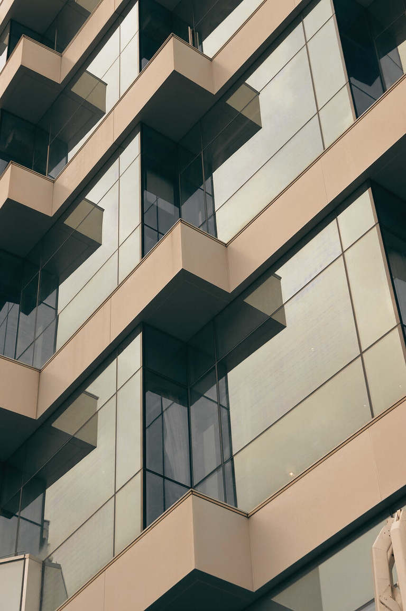
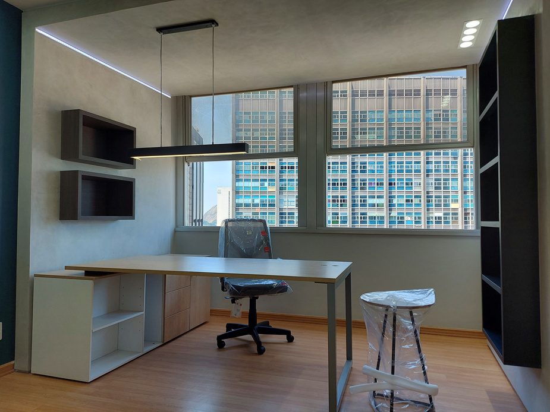
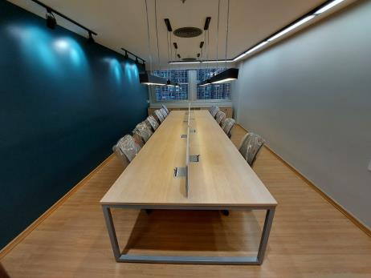
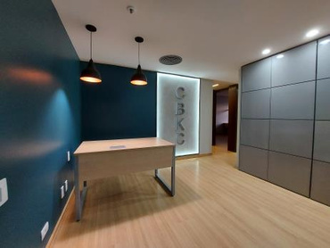
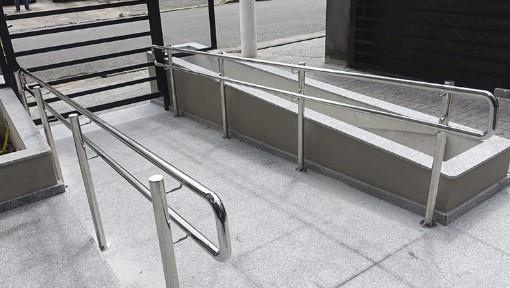
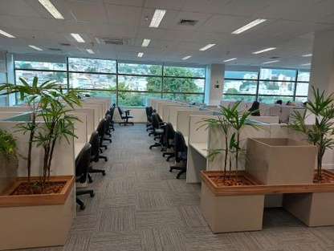
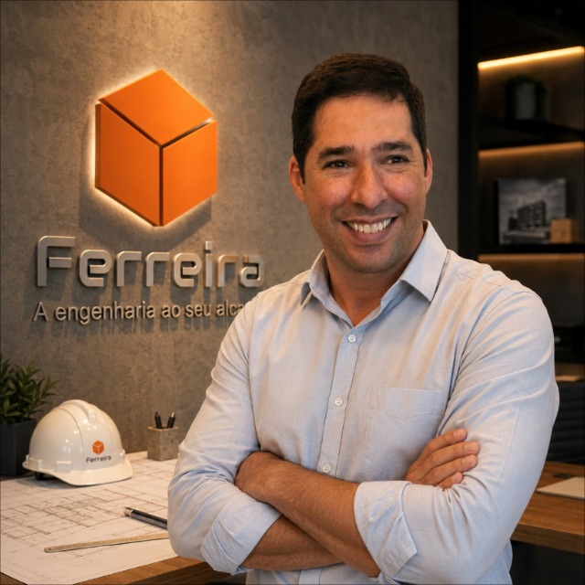

Obras corporativas

ENGENHARIA CIVIL EM TODO O RIO DE JANEIRO
Projetos e obras com técnica, clareza e responsabilidade.
Construções, reformas, projetos estruturais e gerenciamento com acompanhamento técnico do início à entrega.
+25anos de experiência em engenharia e construção

Ambientes corporativos
Salas de reunião
Áreas de recepção01
EMPRESA
Engenharia presente em cada decisão.
A Ferreira une experiência técnica, planejamento e acompanhamento próximo para transformar necessidades em obras bem executadas. Atendemos projetos de diferentes portes em todo o estado do Rio de Janeiro.
Conheça a FerreiraRJAtuação em todo o estado
360°Do projeto à entrega
02
SERVIÇOS
Soluções completas para construir e reformar.
01
Obras e reformas
Execução completa para ambientes residenciais, comerciais, corporativos e industriais.
02Projetos e engenharia
Soluções técnicas pensadas para reduzir imprevistos e orientar cada etapa da obra.
03Gerenciamento
Planejamento, orçamento e acompanhamento técnico com comunicação direta.
04Sistemas especializados
Infraestrutura e adequações para operações que exigem precisão e continuidade.
03
OBRAS
Experiência que pode ser vista.
Execução e acabamento
Salas de reunião
Arquitetura corporativa
Áreas de recepção

Adequações técnicas
Acessibilidade

NOSSO JEITO DE TRABALHAR
Controle técnico sem complicar a conversa.
Cada etapa é conduzida com critérios claros, registro das decisões e contato direto com quem responde tecnicamente pelo trabalho.
- Planejamento antes da execução
- Orçamento apresentado com clareza
- Acompanhamento técnico próximo
- Compromisso com prazo e qualidade

04
RESPONSABILIDADE TÉCNICA
Uma empresa próxima, com engenharia de verdade.
À frente da Ferreira, Sandro Ferreira acompanha os projetos de perto e leva mais de duas décadas de experiência para cada decisão. O resultado é uma relação direta, transparente e comprometida com a entrega.
Conheça nossa históriaEXPERIÊNCIA REGISTRADA
Projetos para empresas e instituições reconhecidas.
TV SBT RioUFRJ COPPETECIpirangaTechnip BrasilClaroInstituto Combustível LegalPorto de AngraCBKC
VAMOS CONVERSAR